編集中のテキストファイルの中から、ある文字列を探したい時には、秀丸エディタの「検索」機能を使えば簡単にできます。
※文字列をあるだけ探したい場合は、grep 機能を使った方が効率的です。詳しくは「●grep/タグジャンプ」を参照して下さい。
編集中のファイルにある「Love」という文字列を探したいとします。
秀丸エディタの「検索」メニューから(もしくはツールバーやファンクションキーで)「検索」を選択して、「検索」のエディットボックスに「Love」と入力します。
通常は1行のみですが、複数行を入力可能にする事もできます。詳細は「補足」-「複数行」を参照してください。

次に、適宜オプションを指定します。ここで、各オプションの意味は以下の通りです。
「大文字／小文字の区別」チェックボックス：
検索文字列の大文字と小文字を区別して検索します。この項目が OFF の場合、上の例で「LOVE」や「love」も検索されます。
「単語の検索」チェックボックス：
この項目が ON になっていると、「Lover」や「ILoveNY」等の、ある単語の一部になっている場合は検索されません。ここで言う「単語」とは、半角英字とアンダースコア("_")のみで構成された文字(列)を指します。
「正規表現」チェックボックス：
検索文字列に「正規表現」が使える様になります。
「正規表現」は「●正規表現について」を参照して下さい。
複数行にマッチする検索に関しては制限が存在します。以下のリンク先を参照してください。
「あいまい検索」チェックボックス：
「正規表現」をさらに便利にした「あいまい」な検索が可能になります(全半角同一視等)。
「あいまい検索」は「●あいまい検索について」を参照して下さい。
「選択した範囲」チェックボックス：
検索の範囲があらかじめ「範囲選択」された部分に限定されます。範囲選択されていない時はこの項目は選択できない様になっています。
文書の一部分を選択する「BOX範囲選択」の場合は、「選択した範囲」は有効になりません。
※このオプションの動作の詳細については、[HME0083A]●検索/置換の「選択した範囲」の動作を参照してください。
「次の秀丸エディタも続けて検索」チェックボックス
現在編集中の秀丸エディタウィンドウの他にも秀丸エディタが開いていた場合、その秀丸エディタウィンドウの内容に対しても検索を実行します。
「一周する」チェックボックス
下検索の場合、ファイルの一番下まで検索し終わった場合、ファイルの先頭に戻って検索を続行します。上検索の場合は逆になります。
「追加の条件」チェックボックス
追加の条件に従って検索する範囲を制限できます。
「検索文字列を強調」チェックボックス
検索を実行後、検索に該当する文字列を強調表示します。
「検索したら閉じる」チェックボックス
OFF だとダイアログ表示させたまま、検索を実行します。
ON の場合、検索を実行すると検索ダイアログを閉じます。また、ダイアログの「閉じる」ボタンが「キャンセル」と表示されます。
最後に検索を行う方向を指定する事で検索が実行されます。
「上検索」(現在のカーソル位置より上を検索します。)
「下検索」(現在のカーソル位置より下を検索します。)
「すべて検索」(ファイル全体を検索します。)
「すべて検索」では、検索時の動作を選択できます。(ボタンを押すとメニューが表示されます。)
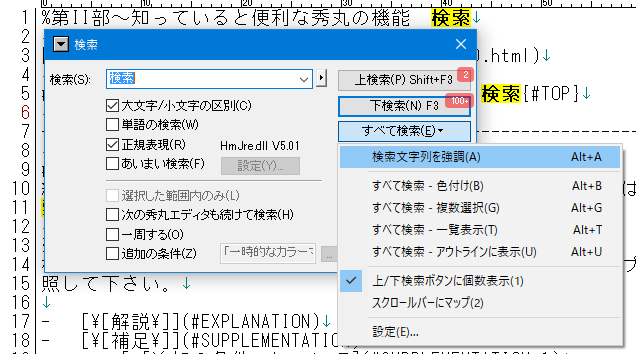
「検索文字列を強調」
カーソル位置はそのままにして検索文字列を強調します。
実行結果
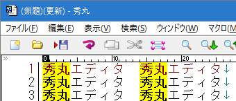
「すべて検索 - 色付け 」
検索文字列を更新せずに、検索条件に一致する箇所に色付けを行います。
実行結果
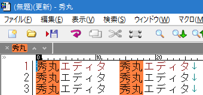
連続で行うと、別の色で色付けします。
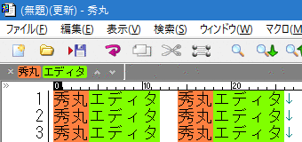
矢印のような部分で、色付けした箇所に移動する事が可能です。
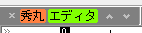
個別に色付けした箇所に移動する事も設定で可能です。
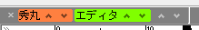
検索の色付けに関しては、「動作環境−検索−検索の色付け」で各種設定が可能です。
「すべて検索 - 複数選択」
検索文字列を更新せずに、検索条件に一致する箇所を複数選択状態にします。
実行結果
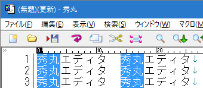
「すべて検索 - 一覧表示」
検索条件にマッチした箇所を含む行を「一覧表示画面」に表示します。表示内容をクリックすると、その箇所に移動します。
「一覧表示画面」から簡易的に検索する事や、「すべて色付け」、「すべて選択(複数選択)」する事も可能です。「すべて行単位コピー」を選ぶと一覧の内容を合成したものが、クリップボードに入ります。 (行番号は入りません)
右下に「一覧表示画面」に表示している行数を表示しています。(マッチした数ではないので、注意すること。)
実行結果
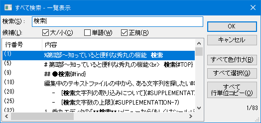
「すべて検索 - アウトラインに表示」
「アウトライン解析の内容」に検索条件にマッチした文字以降を合わせた内容を「一覧画面」に表示します。
元のアウトライン表示
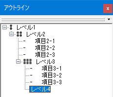
「すべて検索 - アウトラインに表示」実行結果(「ツリー表示-通常」、「検索文字列を強調」がONの状態です)
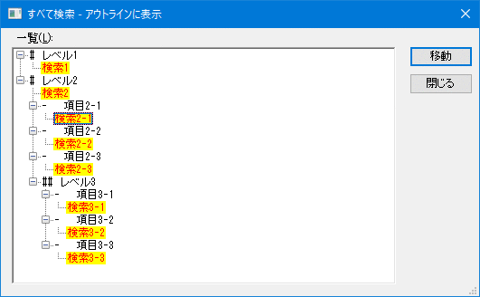
(例は「ツリー表示」ですが、「関数一覧」や「強調表示一覧」でも、項目の下位レベルとして「検索結果」が表示されます)
表示内容をダブルクリックするか、表示項目を選択し「移動」ボタンを押すと、その箇所に移動します。
「アウトライン解析の内容」に検索結果を合成した内容になるため、アウトライン解析の設定が行われている必要があります。
アウトラインの設定が行われていない場合は、秀丸エディタによる「自動解析」の結果と検索結果の合成になりますが、「自動解析」に失敗した場合は、「一覧に何もありません」と表示されます。
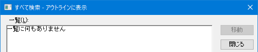
「上/下検索ボタンに個数表示」
上検索/下検索 ボタン部分に、現状の設定条件でマッチした個数を表示します。
「上検索/下検索 ボタン」となっていますが、表示する箇所は設定で変更可能です。 (「動作環境」-「検索」-「すべて検索」)
表示する箇所は以下の5種類です。(表示の上限を100に設定)
「ボタン右上」、「ボタン左上」、「入力上下1」、「入力上下2」
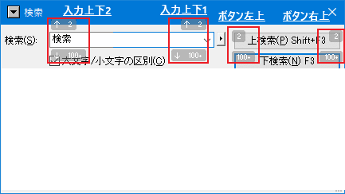
「ボタン右上2」(「ボタン右上」の色違い)
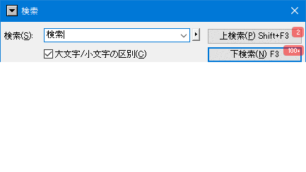
「スクロールバーにマップ」
スクロールバー部分に、現状の設定条件でマッチした行の位置を表示します。
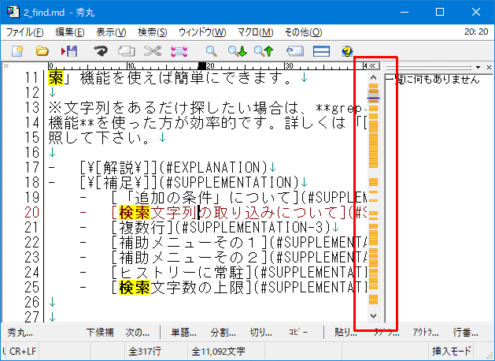
「設定」
「すべて検索」関連の設定画面(「動作環境−検索−すべて検索」)を表示します。
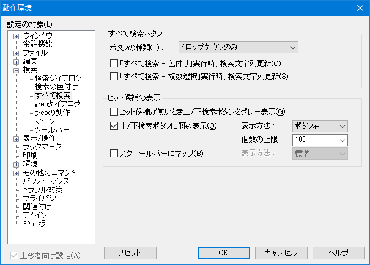
すべて検索ボタンの動作を設定します。
ボタンの動作を設定します。(標準=xx を選んだ場合、ボタン表示が"xx"になります)
ヒット候補の表示について設定します。
表示方法
以下の設定があります。表示状態は「上/下検索ボタンに個数表示」を参照してください。
個数の上限
検索数の上限を設定します。自分で入力も可能ですが、デフォルトで以下の設定があります。
表示方法
スクロールバーに表示するタイミングを設定します。
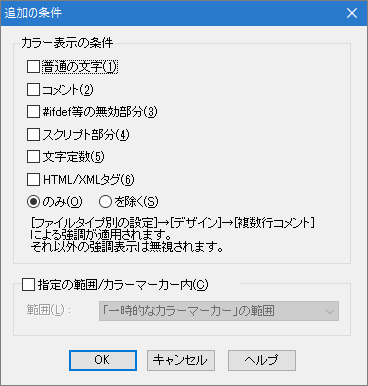
「追加の条件」を使うと、検索の対象にする箇所を、限定したり除外する事が可能です。
「カラー表示の条件」はダイアログの注意書きにあるように、「複数行コメント」の設定で、各部分を認識している場合のみ有効です。
「範囲の指定/カラーマーカー内」は、「選択した範囲内のみ」と似ていますが、通常の範囲選択と違い、複数箇所を対象に出来ます。
以下のいずれかを指定可能です。
「選択した範囲内のみ」 と 「追加の条件」は併用可能です。
追加の条件で「一時的なカラーマーカー」の範囲を使った例です。
例その１
まず、適当な範囲をBOX選択します。
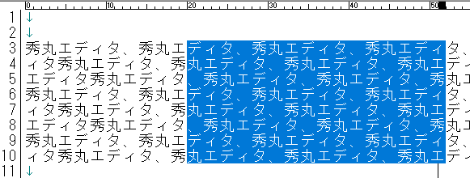
選択範囲にカラーマーカをつけます
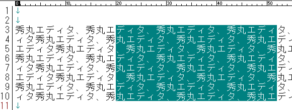
以下の条件で「すべて検索 - 色付け 」を行います。
マッチ範囲の先頭と末尾が、カラーマーカーの範囲内に入っている箇所のみ、マッチしています。
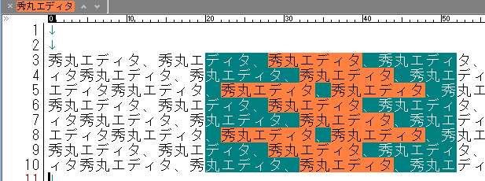
例その２
カラーマーカーはまとまっていなくても問題ありません。バラバラにマーキングを行います。
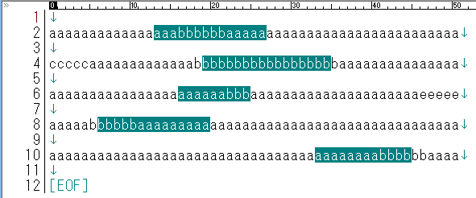
以下の条件で「すべて検索 - 色付け 」を行います。
マッチ範囲の先頭と末尾が、カラーマーカーの範囲内に入っている箇所のみ、マッチしています。
正規表現の"+"を指定した場合、検索エンジンにより結果が変わります。画像はhmjre.dllの場合ですが、他の検索エンジンを使用した場合、4行目、10行目はマッチしません。
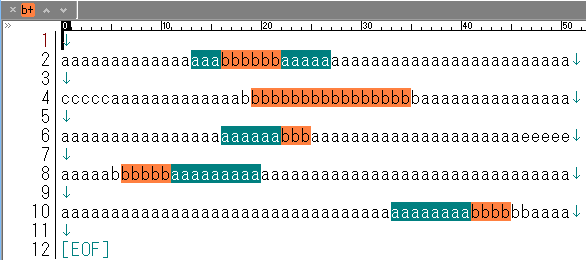
検索ダイアログを開くとき、範囲選択していない場合は、カーソル位置から後の単語部分を「検索内容」として取り込みます。
ファイルの先頭部分にカーソルがある時に、検索ダイアログを開いた場合
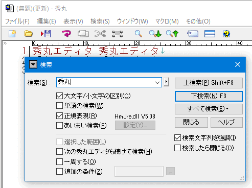
この状態から、検索ダイアログを呼び出すキー(デフォルトは [Ctrl]+[F])を押すと、その隣の単語部分まで取り込み範囲が拡大されます。複数回キーを押すとさらに拡大され取り込まれます。ただし改行までが限度です。
取り込み範囲が拡大されるのは、範囲選択しないで検索ダイアログを開いた場合のみです。範囲選択していた場合、その箇所が取り込まれますが、キーを押しても範囲は拡大しません。
(2回目)
(3回目)
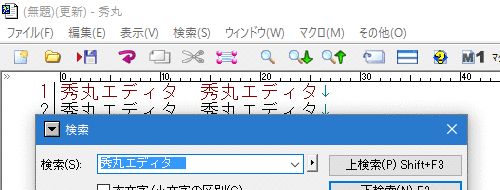
(4回目)
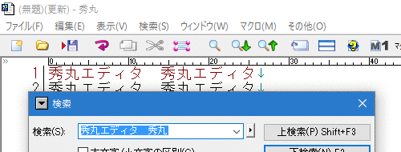
(5回目)
検索ダイアログの「検索」入力部分は通常1行のみですが、複数行を入力可能にする事もできます。「検索」入力部の横にある▲マークを押すと、メニューが表示されます。
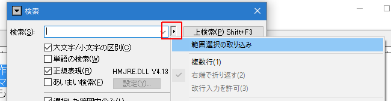
メニューの「複数行」を選択すると、ダイアログの「検索」部分が広がります。複数行にわたる範囲選択をしている場合は、「範囲選択の取り込み」で取り込む事も出来ます。
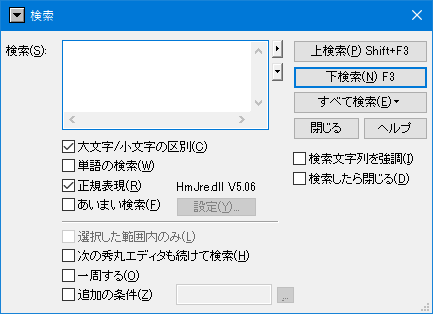
「検索」入力部の横にある▲マークを押すと、表示されるメニューです。正規表現などの説明になっているので、困ったときは押してみましょう。
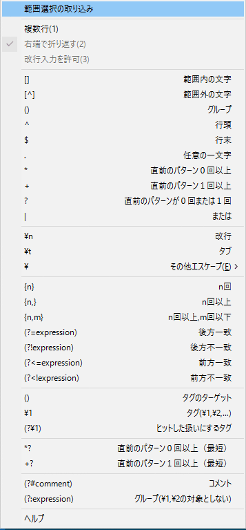
「検索」ダイアログのタイトルバー部分にある「▼」マークを押すと、メニューが表示されます。キーからも出来ますが、「検索文字列の追加取得」等もマウスから可能です。「検索の動作環境」を開いたり、「置換ダイアログ」に切り替える事も可能です。
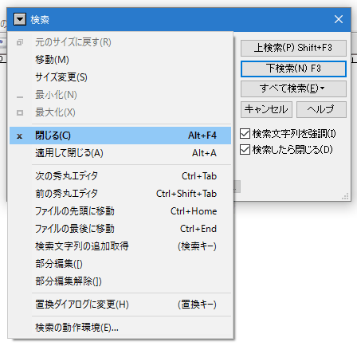
検索すると、検索内容が履歴(ヒストリ)に保存されていきますが、上限があるため、検索を繰り返すと履歴の古いものから順に削除されていきます。
検索内容に「ヒストリに常駐」を設定すると、検索が行われても、履歴から削除される事がなくなります。「ヒストリに常駐」は「>」を押し履歴を表示させ、常駐させたい内容のところで右クリックメニューを使って設定します。
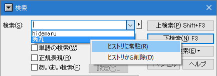
常駐に設定すると、内容の横に「★」が表示され、「ヒストリに常駐」にチェックが入ります。
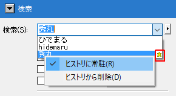
「ヒストリに常駐」は検索だけではなく、置換やgrepでも設定可能です。
複数行の「検索」エディットボックスに入力し、検索に指定できる文字列には上限があり、約4000文字が上限となります。
上限を超えると、警告が表示されます。
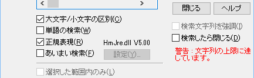